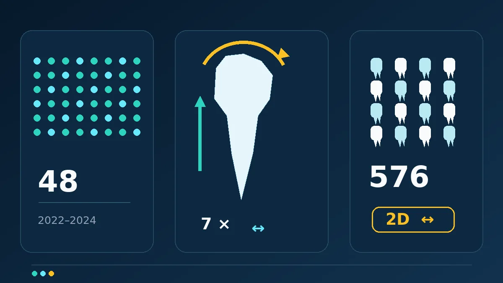

Bu çalışma tedaviyi değiştiren bir talimat değil, planlama ve izlem için bir uyarıdır: Üst ön dişlerde bazı hareketler daha fazla kök değişikliği ölçümüyle ilişkiliydi, fakat değişiklikler sınırlı, tasarım geriye dönük ve görüntüleme iki boyutluydu. Veriler şeffaf plağın doğası gereği daha güvenli ya da daha riskli olduğunu veya her hareket derecesinin aynı miktarda hasar oluşturacağını göstermez.

Bir dakikalık özet
Safa Kurnaz ve Muhammed Hilmi Buyukcavus, geriye dönük klinik çalışmalarını 23 Ekim 2026’da Scientific Reports’ta yayımladı. Temmuz 2022 ile Aralık 2024 arasında diş çekimi yapılmadan ClearCorrect plaklarıyla tedavi edilmiş, ortalama yaşı 19,2 olan 48 hastanın kayıtları incelendi. Toplam 576 keser ve kaninde yedi hareket bileşeni—intrüzyon, ekstrüzyon, iki yönde translasyon, tipping, tork ve rotasyon—kök uzunluğu ve iki boyutlu kök alanındaki değişikliklerle karşılaştırıldı. [1]
En dikkat çekici bulgu üst yan keserlerdeydi: Düzeltilmiş modelde kuron torkundaki her 1 derecelik artış yaklaşık 0,09 mm daha fazla dış kök rezorpsiyonuyla ilişkiliydi. Üst kaninlerde her 1 mm ek ekstrüzyon, izdüşümsel kök yüzey alanında yaklaşık 6,29 mm² daha fazla azalmayla ilişkiliydi. Bunlar ilişki tahminleridir; tek bir hasta için kesin öngörü veya hareketin tek başına rezorpsiyona neden olduğunun kanıtı değildir. [1]
Çalışma nasıl yapıldı?
İki yüz otuz beş kayıt arasından yalnız tam diş dizisine, iskeletsel Sınıf I ilişkiye, orta düzey çapraşıklığa, çekimsiz tedaviye, iyi ağız sağlığına ve standart panoramik görüntülere sahip hastalar seçildi. Travma, önceki ortodonti, kanal tedavili diş, tedavi öncesi rezorpsiyon, sistemik hastalık, diş sıkma veya gıcırdatma ve karmaşık olgular dışlandı. Yirmi altı kadın ve 22 erkek ortalama 32 plak ve 1,81 düzeltme serisi kullandı; tedavi yaklaşık 1,31 yıl sürdü. Sıkı seçim grubu benzeştirdi, ancak sonuçların herkese genellenmesini zorlaştırdı. [1]
Tedavi öncesi ve sonrası dijital modeller damak kıvrımları temel alınarak üst üste getirildi. Her dişin hareketi üç boyutlu modelde ölçüldü; ardından tedavi öncesi ve hemen sonrası panoramik radyografilerde kök uzunluğu, iki boyutlu izdüşümsel kök alanı ve dış kök rezorpsiyonu hesaplandı. Büyütme farkını azaltmak için iki görüntüdeki kuron uzunluğu oranı düzeltme katsayısı olarak kullanıldı. Çoklu testler için düzeltme yapıldı ve regresyon modellerinde aynı hastadaki iki dişin bağımlılığı hesaba katıldı. Ölçümcüler arası ve ölçümcü içi uyum yüksekti. [1]
Sayılar tam olarak ne söylüyor?
Diş grubuna göre ortalama ölçülen rezorpsiyon 0,72 ile 1,49 mm arasındaydı. Yanlış keşif oranı düzeltmesinden sonra kalıcı ilişkiler çoğunlukla üst çenede görüldü. Üst yan keserlerde kuron torku hem kök uzunluğu azalması hem de daha fazla rezorpsiyonla ilişkiliydi. Kuron tippingi basit analizde rezorpsiyonla bağlantılıydı, fakat çok değişkenli modelde istatistiksel eşiği geçmedi. Hareket değişkenlerini içeren model, bu dişlerdeki rezorpsiyon farklılığının yalnız yaklaşık yüzde 19’unu açıklayabildi; büyük bölüm açıklanamadı. [1]
Üst kaninlerde ekstrüzyon, izdüşümsel kök alanındaki azalmayla ilişkiliydi ve model değişkenliğin yaklaşık yüzde 20’sini açıkladı. Alt dişlerde çoklu karşılaştırma düzeltmesinden sonra anlamlı ilişki kalmadı. Yazarlar ölçülen değişikliklerin genel olarak sınırlı olduğunu ve mutlaka klinik açıdan önemli kök hasarı anlamına gelmediğini vurguladı. Çalışmada sabit braket grubu da yoktu; önceki derlemeler iki sistem arasındaki farkı tartışsa bile bu yeni veri bir cihazın diğerinden üstünlüğünü sınamadı. [1] [2]
İlişki neden neden-sonuç değildir?
Gerçek tedavide birden fazla hareket aynı anda gerçekleşir. Araştırmacılar yedi bileşeni aynı modele koydu, ancak kök biçimi, bireysel biyoloji, plağın kullanımına uyum ve gerçekten uygulanan kuvvet gibi etkenler bütünüyle ayrılamaz. Çalışma geriye dönüktü; hastalar farklı tork veya ekstrüzyon miktarlarına randomize edilmedi. Bu nedenle derece başına 0,09 mm katsayısı bu seçilmiş örneklemdeki ortalama ilişkidir; biyolojik yasa veya tedavi reçetesi değildir. [1]
İkinci sorun görüntüleme yöntemidir. Panoramik radyografi üç boyutlu bir yapıyı iki boyutta gösterir. Özellikle bukkolingual tork ve aksiyel rotasyonda kökün açısı değiştiğinde, gerçek doku kaybı olmadan da görüntüdeki uzunluk ve alan değişebilir. Yazarlar PRSA’nın doğrudan hacim ölçümü olmadığını ve iki boyutlu yöntemlerin rezorpsiyonu fazla tahmin edebileceğini belirtti. Aynı cihaz ve standart pozisyonlama hatayı azaltır, ancak ortadan kaldırmaz. [1]
Sınırlılıklar ve kanıt düzeyi
Örneklem küçük, tek merkezli, genç ve seçilmişti; yalnız orta düzey çapraşıklığı olan, çekimsiz Sınıf I olgular ile tek plak sistemi ve malzemesi incelendi. Analiz keser ve kaninlerle sınırlıydı. Görüntüler yalnız başlangıçta ve tedavinin hemen sonunda alındığı için olası onarım veya uzun dönem sonuç bilinmiyor. Alt çene modelleri üst çeneye göre yönlendirildiğinden küçük oklüzal oturma etkileri de tamamen dışlanamadı. [1]
Çalışma hakemli ve istatistik yaklaşımı özenli olsa da kanıt düzeyi gözlemsel ve keşifseldir. Makale erken erişimli kabul edilmiş sürümdür ve son sürümde dil veya dizgi düzeltmeleri görebilir. Yazarlar finansman ve çıkar çatışması bildirmedi; bu şeffaflık önemlidir, ancak tasarım sınırlılıklarını gidermez. Bulguların doğrulanması için daha büyük, ileriye dönük çalışmalar, uygun üç boyutlu görüntüleme ve daha çeşitli hasta grupları gerekir. [1]
Tedavi önerisi vermeden pratik anlam
Savunulabilir mesaj, ortodontik planlamada hem diş türünün hem de hareket biçiminin önemli olduğu ve yüksek riskli olgularda kök izleminin değer taşıdığıdır. Savunulamayacak mesaj ise şeffaf plakların belirli miktarda rezorpsiyona “neden olduğu” veya herkes için sistem değişikliği gerektiğidir. Risk değerlendirmesi ve görüntüleme zamanı kişinin öyküsüne, muayenesine ve tedavi planına bağlıdır; bu haber hasta ile ortodonti uzmanının ortak kararının yerini tutmaz.
Birincil kaynaklar
Yalnız özet değil, hakem değerlendirmesinden geçmiş ve kabul edilmiş Article in Press tam metni incelendi. Makale kalıcı DOI ile 23 Ekim 2026’da yayımlandı, CC BY-NC-ND 4.0 lisanslı ve son dizgi düzeltmeleriyle değişebilir. İnceleme sırasında makale sayfasında ve başlık/DOI taramasında düzeltme ya da geri çekme kaydı görülmedi. Eşlik eden görsel bağımsızdır; makalenin resmi şekli değildir.
- Kurnaz S, Buyukcavus MH · Diş hareketleri ve dış kök rezorpsiyonu üzerine geriye dönük klinik çalışma · Scientific Reports · 23 Ekim 2026 · DOI: 10.1038/s41598-026-77321-y
- Selvaraj M, Nivethitha B, Madhan B · Şeffaf plak ve sabit braketlerde kök rezorpsiyonu şemsiye derlemesi · 2025 · DOI: 10.1016/j.jobcr.2025.06.011
Bu yazı genel bilgilendirme amaçlıdır; kişiye özel tanı veya tedavinin yerini tutmaz.